来源：https://mjizjbkmh8.feishu.cn/docx/ZamRdgKWYoR8dExst3Ic2Bm0nbb
各位优秀的圈友们，你们好呀，见字如面，很久没来生财分享了哈哈，智慧这次又进行了一个迭代，希望智慧的搞钱价值分享可以给更多圈友带来启发和价值嘿嘿！
智慧先简单做个自我介绍哈哈。
我自己是土生土长的农村娃，从小到大都是穷养过来的。
再加上自己家庭不和睦不和谐经常吵架打架，所以我从小就很自卑内向，如下图所示：
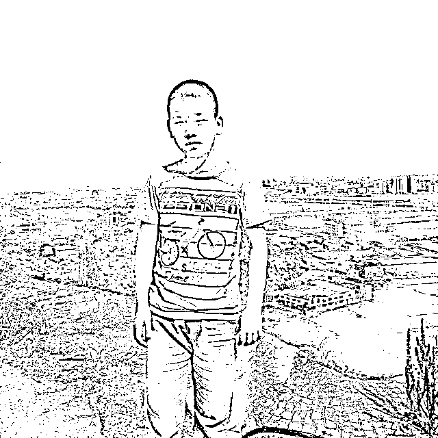
但幸运的是我一路以来都比较乖巧懂事，所以在上学的时候遇到了很多贵人老师。
他们一步一步引导我积极向上，引导我活泼开朗，甚至有的老师改变了我一辈子的人生轨迹，引导我考上了飞行员。
然后考上飞行员之后，我特别珍惜这个逆天改命的机会，所以在大学做了很多以前不敢想象的事情。
比如担任班干部锻炼自己能力的同时获得了校级优秀共青团干部等荣誉，成功入党，社会实践，努力学习拿奖学金，做自媒体IP一年变现了10w＋。
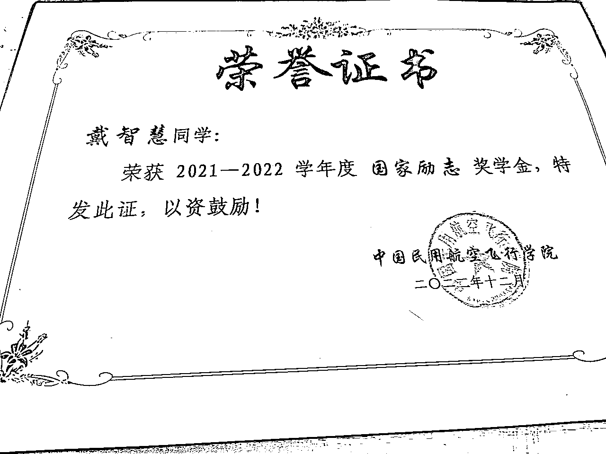
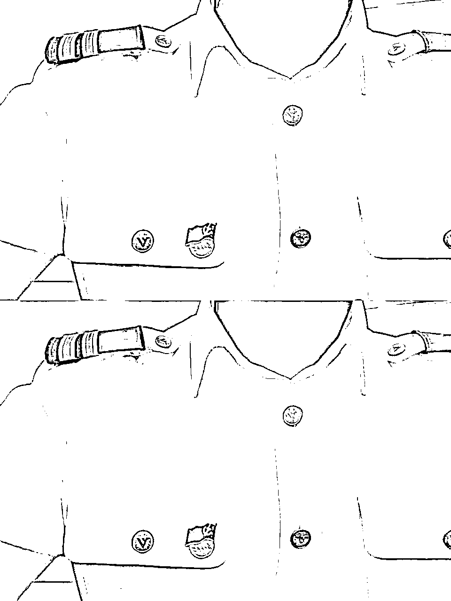
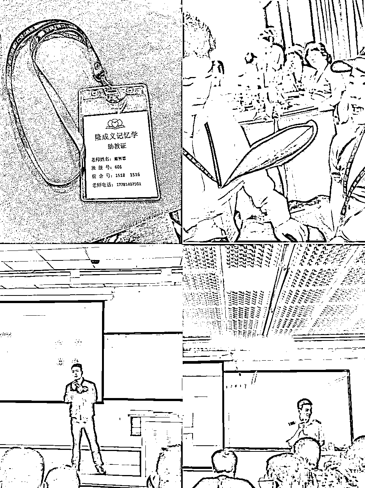
其中令我最骄傲的事情之一就是做自媒体一年变现了10w+，为什么呢？因为做自媒体赚到钱了，他治愈了我所有的自卑胆小，治愈了我所有的唯唯诺诺，让我变得更加自信独立、勇敢大方！
我到现在还记得以前第一次跟我的自媒体老师靠谱姐约电话的时候，我紧张得瑟瑟发抖，说话声音都是细声细语的，也很颤抖哈哈。
但是一年过去了，你们敢信？现在的我，可以独立做自己的陪伴群分享，可以每天发五条朋友圈，可以跟自己合伙人约电话提供价值，可以跟很多朋友线下面基侃侃而谈。
这在我以前真的是不敢想象的，但这都在因为我遇到了圈友白哥、芷蓝姐和靠谱姐，成为靠谱姐的合伙人加入生财有术做自媒体一年变现了10w＋以后实现了真正的逆袭！
所以接下来我将进行正式分享，智慧尽可能得将自己所学到的、所知道的、所踩过的坑以及如何变现10w＋的所有都进行全盘分享~，希望可以给那些刚加入生财做自媒体或者还没拿到结果的朋友带来鼓励和力量！
今天的分享分为这两个部分
一、为什么我要选择做自媒体IP？
二、一年变现10w＋，我做对了什么？
一、为什么我要选择做自媒体IP
智慧在做自媒体IP之前，我一直是在做闲鱼iPad电商这个项目的。
当时22年，我靠做这个项目积累了我的人生第一笔五万块，这是我在互联网上的第一桶金。
（PS：这个实战项目智慧也在生财全盘分享过：https://articles.zsxq.com/id_r06eceqhg5dp.html）
我记得23年的一个寒假，我印象特别清晰，当时我开了三台店铺做矩阵卖iPad，然后有一天店铺爆单了！
就是从早回到晚的消息！不停地销售，成交，发单，这三者之间循环，因为当时对这个项目特别熟悉了！
那一天我的利润是有史以来最高的，1800＋的利润，一天卖出去了8单iPad，但是到了晚上我真的感觉到好空虚！
我就觉得当时我是一个赚钱机器一样，没有任何的一点自由和成长空间，所以我就开始了寻找我的第二收入曲线之路！
去年1月的时候当时我刚好在生财圈友理白哥的群里看到了圈友靠谱姐的分享，然后主动链接了靠谱姐，靠谱姐给了我一份见面礼，是靠谱姐22年的陪伴群分享精华。
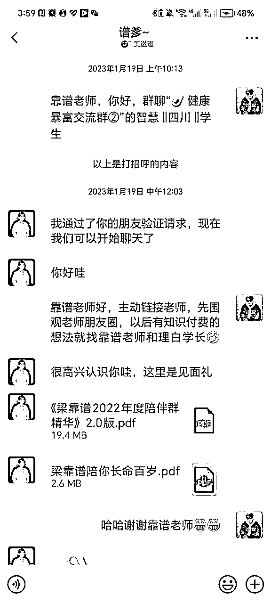
当时收到精华之后我真的有认认真真在学习在看，学到了很多我以前没接触过得东西，比如：私域怎么运营、朋友圈怎么发等等。
然后也了解到靠谱姐也是跟我一样普通农村家庭出生！然后靠谱姐主业还是医生，但她的自媒体做的依然很棒，她通过做自媒体IP做到了年收入大几百万，而且还有那么多的朋友都喜欢靠谱姐！
所以，当时这就给我埋下了一个种子，我当时心里想的就是我一定要成为像靠谱姐那样优秀的人!自己可以一边学习很多东西一边可以赚钱的同时带很多人一起成长赚钱，还可以得到很多朋友的喜欢！
所以在学习了精华和靠谱姐的朋友圈不到半个月之后，我就直接写了一长段文字向靠谱姐说明要加入合伙人。
然后聊了几句之后就直接打了合伙人的钱给了靠谱姐，成为了靠谱姐的合伙人，后面也果断跟随靠谱姐加入了生财有术！当时我也没有向靠谱姐提很多问题，就是因为我已经非常确定要成为像靠谱姐那样优秀的人！
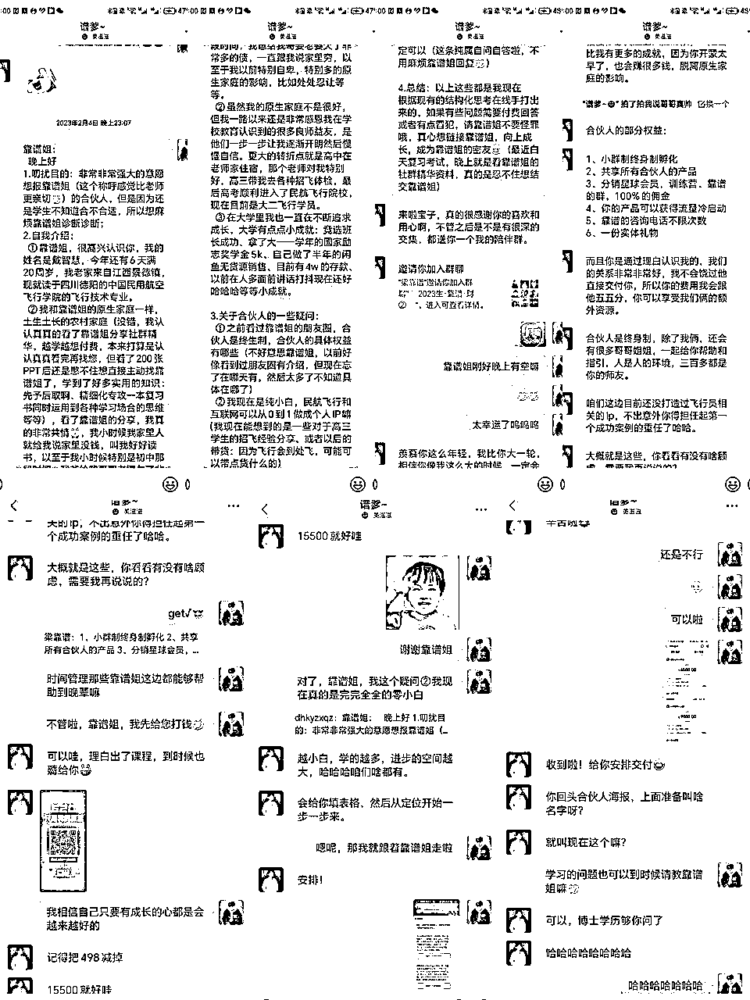
所以去年2月是我正式开始入局做自媒体的时候，也是我现在年变现10万＋梦开始的时候！
二、一年变现10w＋，我做对了什么
1、重视朋友圈，积私域流量
去年2月智慧刚加入生财做自媒体的时候，靠谱姐就跟我说做IP，朋友圈特别重要！还有自己的私域好友也必须得要积累！
也就是重视流量还有我们的线上店面朋友圈的打造，只要我们的流量慢慢多了，然后再配合上一个精美的店面，那么当朋友有需求就会有人愿意为你买单。
所以从去年2月份开始，智慧就是一直在不断参加各种训练营，一边学习一边积累私域好友，然后也会发长文贴发在各个星球上。
一年时间过去了，除去现实上的微信朋友，智慧现在的有效私域是2500，算下来平均一天加了6个朋友（还是满足了靠谱姐一直跟我们强调的每天必须加5个朋友的哈哈）。
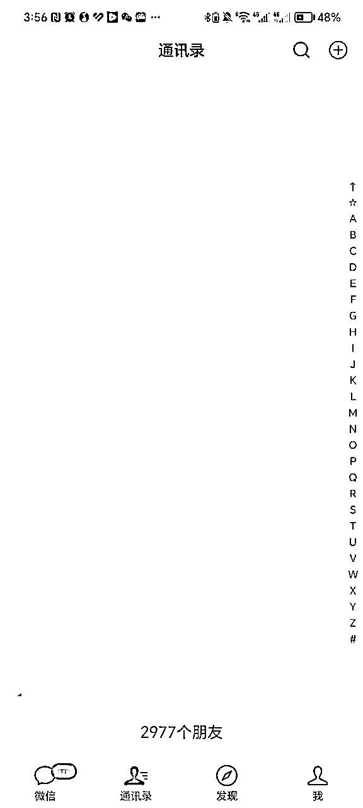
然后智慧的朋友圈也从过去的一天发一条都费劲到现在也可以一天输出七八条，而且也开始有朋友一直给智慧点赞和评论了！
以前智慧的朋友圈真的是无论怎么发都没有人点赞的，因为当时私域朋友太少了。但是一年时间过去了，智慧也开始被人看见开始被人喜欢开始被喊大佬了哈哈。
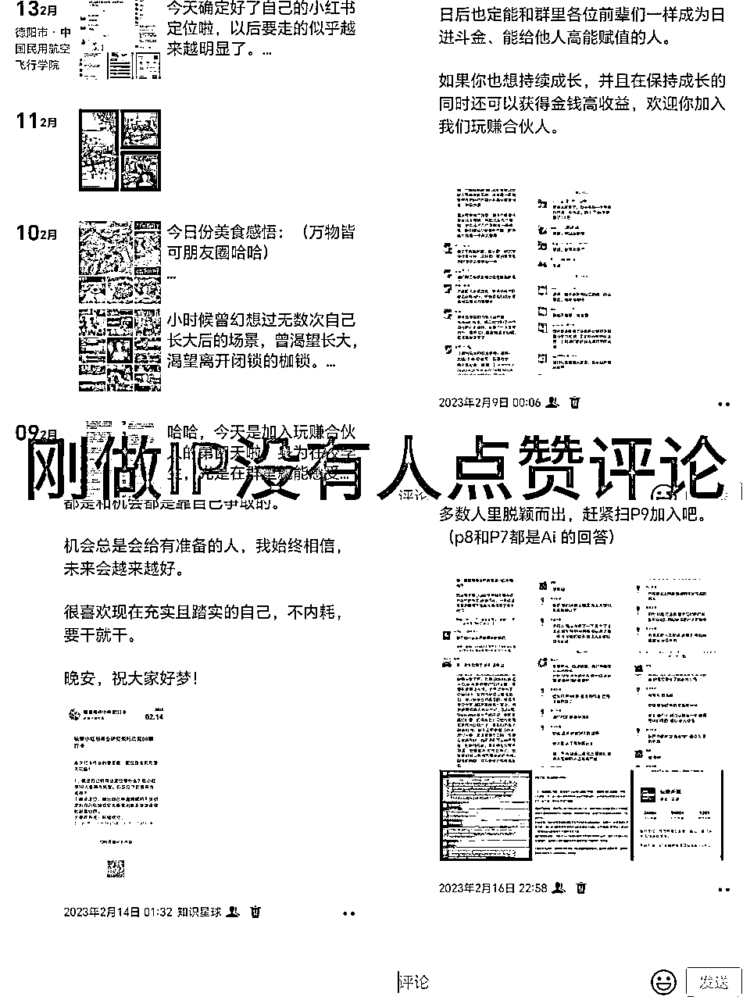
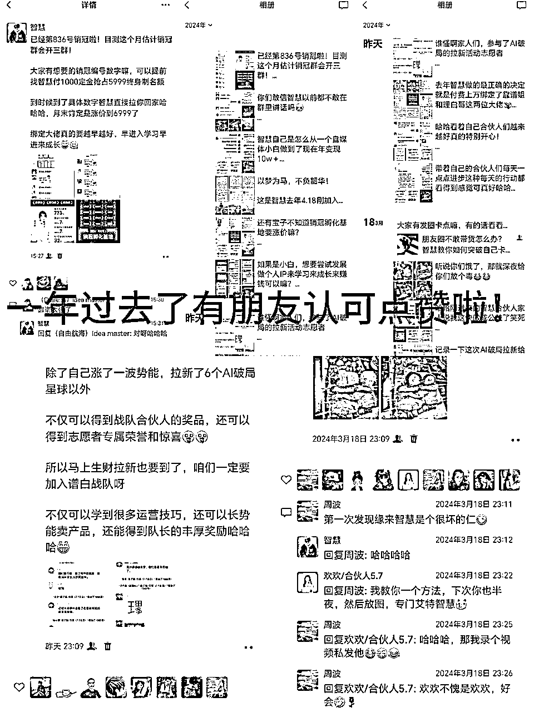
所以前期当我们没流量，朋友圈输出量不够的时候，咱们一定要坚持去做就行了，智慧刚开始做自媒体的时候，前七个月一万不到。
然后后面因为一篇项目实操复盘贴在生财被加精了之后，收入直接爆发，两个月GMV7万，再到现在2月17号开始到现在一个月的时间GMV近9万！
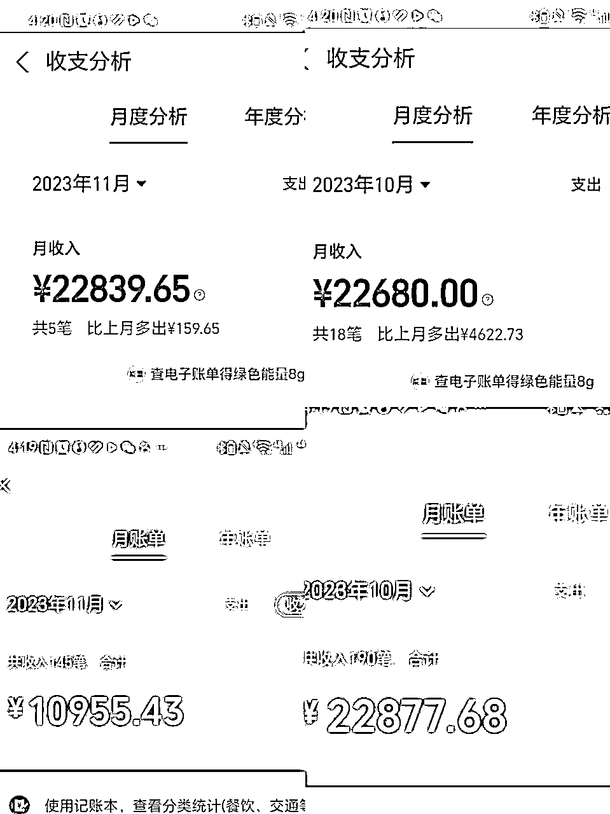
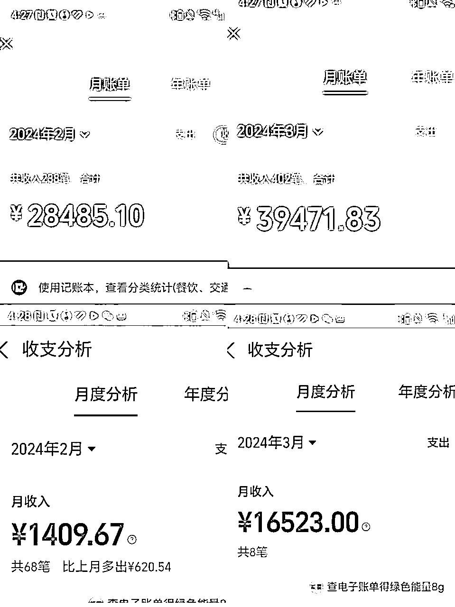
智慧自己一年变现的10w+真的就是从朋友圈转化而来的！你会发现只要认真发朋友圈，很多朋友刚加上你，看了一下你的朋友圈就直接自动打钱了！谈单的机会都很少给我们！
所以，大家做个人IP必须得重视朋友圈还有自己私域好友的积累！
2、听老师的话，不断复制自己
智慧去年刚开始做自媒体的时候，不是只有闲鱼这个项目的经验嘛，当时靠谱姐给我的建议就是做闲鱼iPad电商这个项目的导师
自己可以一边做闲鱼电商，一边收学员收私教去赚钱开启自己的知识付费的第二收入曲线。
当时我的内心就是觉得自己的这个项目很low，没有其他大佬的成绩牛，所以自己觉得不好招生，自己自认为没有什么好教的。
所以就因为当时自己的那一个卡点加上自己就是不听靠谱姐的话，然后前七个月的收入都是靠分销其他老师的闲鱼课程，还有一些自媒体社群等等，总共自媒体这块的营收是一万左右！
后面两个月沉淀了一次变现GMV7w＋的案例，还是因为生财官方邀约智慧去生财分享闲鱼iPad电商这个项目的深度复盘拆解。
所以智慧就刚好顺势开启了自己闲鱼iPad电商这个项目的社群服务和私教陪跑，所以大家看我这次爆发的7w＋的变现就是把自己之前沉淀下来的经验复制了下来而已。
然后今年为什么一个月变现的GMV近9万呢？难道还是因为复制自己嘛？没错哈哈，就是再次复制了自己做过项目私教服务陪跑，带过学员出成绩这个案例！
我再一次把以往所有学到的经验还有自己实战过得经验进行统一打包复制，推出了自己的自媒体陪伴群，还有自己的十年合伙人这两个产品！
因为智慧最开始被靠谱姐吸引的点就是因为她可以带很多朋友一边赚钱一边成长，所以智慧也想成为这样的人，于是就开启了自己的自媒体IP陪跑这条路！
所以大家会发现，智慧成功的地方都是因为对自己进行了一个复制，然后去交付更多的朋友，带他们一起成长一起赚钱，你就会发现自己变现也就很容易了！
因为这些都是我们自己走过来的路，我们可以成功，当然也可以交付别人，带着别人一起成长赚钱！所以再强调另外一个点就是一定要听老师听有结果的人的话！
不要像我一样，非得撞到南墙了，才肯回头乖乖得继续听老师的话，早听话真的就是早赚钱！
3、找准对标，先抄再超
抄作业是什么意思呢？并不是说原封不动的去抄袭别人的创作结果哈！而是抄已经跑通过的交付模式，已经跑通过的商业模式！
为什么这样说呢，给大家拆解下智慧自己之前收闲鱼iPad电商学员的产品体系就知道啦！
当时因为自己的项目实操贴在各个星球被加精之后，是有很多精准流量加到我们的，所以这个时候为了不浪费这波流量。
当时我是直接开启了两个产品的交付，一个是低客单49.9一年的iPad电商社群，另外是1299季度私教这样子的产品体系。
然后两个产品的交付也是不一样的，社群就是提供一个手册和答疑，而我们的私教还会额外提供自己积攒的爆款文案和素材，还有电话陪跑等等服务。
这样的产品体系设计，一方面可以让刚加上我们的朋友减少决策成本，因为如果下定决心想认真做项目的基本就会选私教服务，而只是想了解一下的也会选择低客单来了解一下。
这种低客单＋高客单的产品体系非常有利于增加我们的付费用户的转化率！那这种交付模式是智慧凭空想象出来的吗？
当然不是的，这是我借鉴的咱们很多做自媒体的朋友，他们做陪伴群，做合伙人的这种低转高的一种商业模式，所以去年智慧这样借鉴去做产品，转化率也特别高！
就是跑通过的一种商业模式，一种产品体系，经过市场验证拿到了结果，那么我们大胆去抄作业就行了，他们跑通了，只要我们认真去做肯定也不会太差！
再给大家拆解一下智慧这个月营收近9万的商业模式！当时智慧考虑确定要做私域运营教练，带领更多人成长带领更多人做IP之后。
我是花了两天时间去做调研的，该怎样重新设计自己的产品体系，看身边的人是怎么样做到的，而且人家是怎么拿到结果的。
然后调研清楚之后，我发现了一个一百万的商业模型，就是靠做陪伴群，每天坚持日更，然后合伙人产品是从199一起，每期几个人这样子去搭建的产品体系。
所以智慧也清楚自己刚做完私教服务的陪跑，然后再加上自己懈怠了一段时间的朋友圈，所以智慧很适合这种产品体系。
陪伴群先在自己以前付费学员里面进行流量冷启动，然后49.9一年，每满50人涨价10元，合伙人产品从199开始，一期三人，每满3人涨价200这样去做。
然后一个月过去了，智慧的GMV近9万就是因为自己低转中转高的产品体系，我的陪伴群是低客单，我的合伙人是中客单，然后销冠孵化基地、理白IP俱乐部还有玩赚合伙人这些就是高客单。
因为咱们确确实实是有价值有经验可以提供给咱们付费学员的，只要陪伴群的人感受到了价值和陪伴，可能就会想要加入你的合伙人。
然后在咱们自己的合伙人圈子里面带他们成长带他们进步，他们本身就对我们是信任和喜欢的，到了他们想要更大的资源和平台的时候自然而然就会来找我们补差价买我们的高客单~
所以呀，咱们尽管先抄已经跑通过的商业模式，然后大胆去行动，只要行动了就会有结果。
千万别觉得市面上都是一样的产品，会不会没人买单这种类似的抵抗情绪在。当你有这些卡点的时候，别人没准已经收到了第九期的合伙人了！
只要咱确确实实有经验有过案例，那就大胆得去复制自己去交付别人就可以呀!
然后再借鉴学习其他人的产品体系和商业模式去行动就行了！因为我们每一个人本身就是一个差异化的存在哈哈！
4、跟对老师，选对圈子
最后还特别想分享的一点就是，咱们跟对老师，选对圈子真的特别重要！
你看如果智慧一开始没有绑定圈友靠谱姐、芷蓝姐还有理白哥这三位圈友大佬，可能就不会有2月自己变现近9万的故事了，也不会有老师跟智慧说要去写朋友圈，要去积累私域！
就没有智慧现在一年变现10w＋的故事，所以咱们现在来到了生财圈子，我们每一个人都是有机会去逆袭的。
智慧也是刚起步从自媒体小白开始行动坚持了一年，因为跟对了老师选对了圈子，所以也拿到了10W＋的小结果！
所以智慧也相信在座的各位优秀的朋友们，只要不断坚持不断跟着有结果的老师去行动去坚持，也会和智慧一样取得成绩的！
跟对了老师，选对了圈子，只要不下牌桌，咱们就会有机会，我们一定要坚持呀！
以上就是智慧的分享哦，希望可以给圈友们带来鼓励和力量呀！
最后再次感恩我的自媒体老师靠谱姐、理白哥还有芷蓝姐他们，感恩能够通过他们加入生财有术这么优质的搞钱社群！让我可以分享自己做自媒体一年拿到了10W+的成绩和结果的经验哈哈！